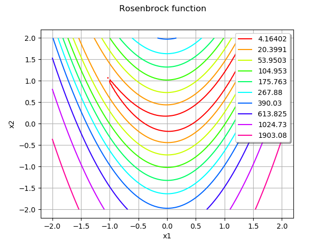
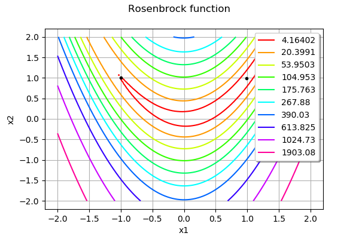
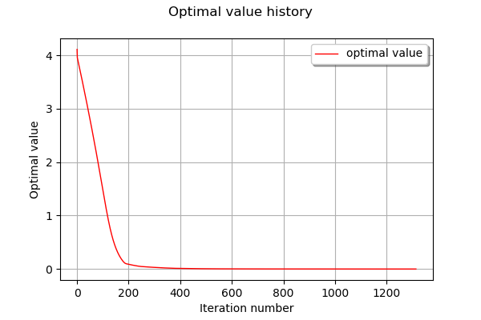
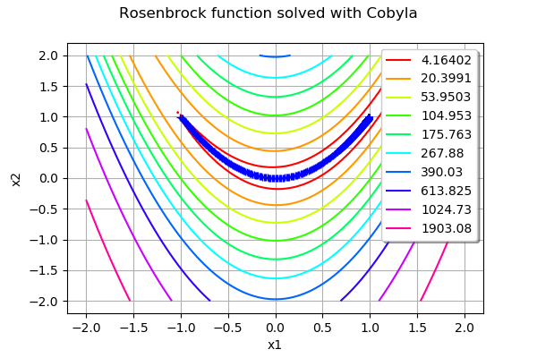
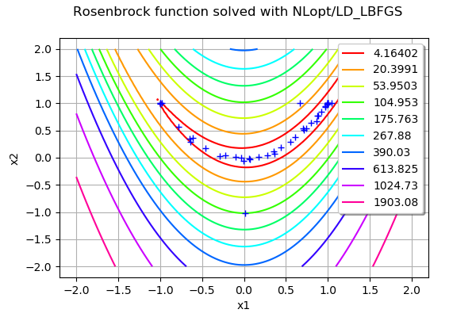

Quick start guide to optimization¶
In this example, we perform the optimization of the Rosenbrock test function.
Let be parameters. The Rosenbrock function is defined by
for any . This function is often used with and . In this case, the function has a single global minimum at:
This function has a nonlinear least squares structure.
References
Rosenbrock, H.H. (1960). “An automatic method for finding the greatest or least value of a function”. The Computer Journal. 3 (3): 175–184.
Definition of the function¶
[1]:
import openturns as ot
[2]:
rosenbrock = ot.SymbolicFunction(['x1', 'x2'],
['(1-x1)^2+100*(x2-x1^2)^2'])
[3]:
x0 = ot.Point([-1.0, 1.0])
[4]:
xexact = ot.Point([1.0, 1.0])
[5]:
lowerbound = [-2.0, -2.0]
upperbound = [2.0, 2.0]
Plot the iso-values of the objective function¶
[6]:
rosenbrock = ot.MemoizeFunction(rosenbrock)
[7]:
graph = rosenbrock.draw(lowerbound, upperbound, [100]*2)
graph.setTitle("Rosenbrock function")
graph
[7]:

We see that the minimum is on the top right of the picture and the starting point is on the top left of the picture. Since the function has a long valley following the curve , the algorithm generally have to follow the bottom of the valley.
Create and solve the optimization problem¶
[8]:
problem = ot.OptimizationProblem(rosenbrock)
[9]:
algo = ot.Cobyla(problem)
algo.setMaximumRelativeError(1.e-1) # on x
algo.setMaximumEvaluationNumber(50000)
algo.setStartingPoint(x0)
algo.run()
[10]:
result = algo.getResult()
[11]:
xoptim = result.getOptimalPoint()
xoptim
[11]:
[0.99251,0.985022]
[12]:
delta = xexact - xoptim
absoluteError = delta.norm()
absoluteError
[12]:
0.016745946097259285
We see that the algorithm found an accurate approximation of the solution.
[13]:
result.getOptimalValue() # f(x*)
[13]:
[5.6392e-05]
[14]:
result.getEvaluationNumber()
[14]:
10520
[15]:
graph = rosenbrock.draw(lowerbound, upperbound, [100]*2)
cloud = ot.Cloud(ot.Sample([x0, xoptim]))
cloud.setColor("black")
cloud.setPointStyle("bullet")
graph.add(cloud)
graph.setTitle("Rosenbrock function")
graph
[15]:

We see that the algorithm had to start from the top left of the banana and go to the top right.
[16]:
result.drawOptimalValueHistory()
[16]:

The function value history make the path of the algorithm clear. In the first step, the algorithm went in the valley, which made the function value decrease rapidly. Once there, the algorithm had to follow the bottom of the valley so that the function decreased but slowly. In the final steps, the algorithm found the neighbourhood of the minimum so that the local convergence could take place.
In order to see where the function was evaluated, we use the getInputSample method.
[17]:
inputSample = result.getInputSample()
[18]:
graph = rosenbrock.draw(lowerbound, upperbound, [100]*2)
graph.setTitle("Rosenbrock function solved with Cobyla")
cloud = ot.Cloud(inputSample)
graph.add(cloud)
graph
[18]:

We see that the algorithm made lots of evaluations in the bottom of the valley before getting in the neighbourhood of the minimum.
Solving the problem with NLopt¶
We see that the Cobyla algorithm required lots of function evaluations. This is why we now use the NLopt class with the LBFGS algorithm. However, the algorithm may use input points which are far away from the input domain we used so far. This is why we had bounds to the problem, so that the algorithm never goes to far away from the valley.
[19]:
bounds = ot.Interval(lowerbound, upperbound)
[20]:
problem = ot.OptimizationProblem(rosenbrock)
problem.setBounds(bounds)
[21]:
algo = ot.NLopt(problem, 'LD_LBFGS')
algo.setStartingPoint(x0)
algo.run()
[22]:
result = algo.getResult()
[23]:
xoptim = result.getOptimalPoint()
xoptim
[23]:
[1,1]
[24]:
delta = xexact - xoptim
absoluteError = delta.norm()
absoluteError
[24]:
7.740583643426769e-12
We see that the algorithm found an extremely accurate approximation of the solution.
[25]:
result.getOptimalValue() # f(x*)
[25]:
[1.77616e-23]
[26]:
result.getEvaluationNumber()
[26]:
44
This number of iterations is much less than the previous experiment.
[27]:
inputSample = result.getInputSample()
[28]:
graph = rosenbrock.draw(lowerbound, upperbound, [100]*2)
graph.setTitle("Rosenbrock function solved with NLopt/LD_LBFGS")
cloud = ot.Cloud(inputSample)
graph.add(cloud)
graph
[28]:
